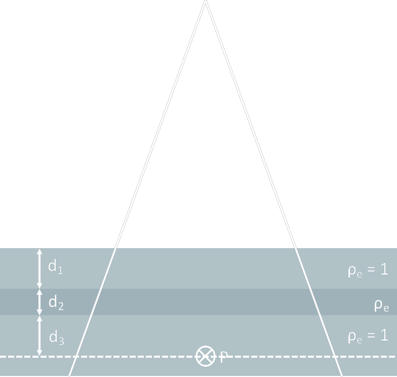

| MU Calculation |
i.e. If I want point (x) to be receiving (?) cGy How many MU I should tell the machine to generate? Assuming PDD, beam profile and output table correction factors are independent |
|||||||||
| Extended SSD |
1. Output
∵ Inverse Square
↓ Dose Rate ↓ cGy/MU 2. PDD
\[ \frac{PDD_2}{PDD_1} = \frac{ \left( \frac{f_2 + d_m}{f_2+d} \right)^2 }{ \left( \frac{f_1 + d_m}{f_1 + d} \right)^2 } \]
\[ PDD_2 = PDD_1 \left( \frac{f_2 + d_m}{f_2+d} \right)^2 \left( \frac{f_1 + d}{f_1 + d_m} \right)^2 \]
3. Surface Dose
↓ dose rate
↓ surface dose (accumulative) 4. Exit Dose
PDD fall off ↓ rapid
|
|||||||||
| Field Size (output table / field correction factor / relative dose factor) |
Equivalent Field
Day's Rule:
rectangular field can be characterised by equivalent square field by keeping \( \large \frac{Area}{Perimeter} \) ratio the same , i.e. \[ \frac{ab}{2(a+b)} = \frac{q^2}{4q} \] \[ q = \frac{2ab}{a+b} \] The equivalent spare field can be equated to a circular field with the same area ,
\[ q^2 = \pi~r_{eq}^2 \]
\[ r_{eq} = \frac{1}{\sqrt{\pi}}~q \]
Field Correction Factor
$$
\begin{align}
FCF(FS,~E) &= CF~SF \\
&=\frac{D(FS)}{D(10)}
\end{align}
$$
where
at SSD + zmax
CF = collimator scattering factor SF = phantom scattering factor |
| PDD |
Definition
For a given
Contribution
Elements that make up of PDD:
Mayneord F Factor
\[ F = \left( \frac{ f_2 + d_{max} }{f_1+ d_{max}} \right)^2 \left( \frac{f_1+d}{f_2+d} \right) \]
For extended SSD setting with the same FS on surface, the PDD at a point at the same depth will be \[ PDD(d, f_2) = PDD(d, f_1) \times F \] Oblique Beam (electron beam)
↑ oblique angle
↓ dmax (towards surface) ↓ d80% ↑ d20% |
| Collimator Factor |
= represents the scatter component that contributes to the dose Measurement
For every Factors
↑ FS, ↑ secondary photons
|
| Scatter Factor |
Peak Scatter Factor
= ratio of the dose in air to dose in phantom at SSD + zmax
\[ PSF(FS,~E) = \frac{D_{w}}{D_{air}} \] Measurement
For every Factors
|
| Beam Attenuation + Scatter |
= tissues with density and atomic number different from those of water
e.g.
after air, dose ↑ after bone, dose ↓

Effect of tissue inhomogeneity
Tissue Inhomogeneity Correction Methods [1]
= correct for
equivalent water depth :( only account for primary beam, not consider scatter ∴ overestimates dose \[ D_{P, d'} = D_{P, d}~\frac{TAR_{d'}}{TAR_d} \]
where
d = uncorrected depth
\( = d_1 + d_2 + d_3\) d' = water equivalent depth \( = d_1 + \rho_{e, 2}~d_2 + d_3 \)
Assume
(1) Compton scattering only, (2) for a point P that is not in the build-up region and (3) not inside the inhomogeneity, \[ D_P = D_{P, d}~\left( \frac{TAR_{d_2 + d_3}}{TAR_{d_3}} \right)^{\rho_{e, 2} - 1} \]
= correct for
equivalent water depth and scattering effect on FS \[ D_{P, d', r'} = D_{P, d}~\frac{TAR_{d', r'}}{TAR_{d, r}} \]
where
r = scaled FS
\( = r ~\rho_e' \) \(\rho_e'\) = weighted e density summing over the entire irradiated volume \(\large =\frac{\sum \rho_e W}{\sum W}\) W = weighting factor accounting for Compton scatter cross section
= shifting isodose line beyond the inhomogeneity by n × d2
e.g. after bone, isodose line shift towards the surface
after air, isodose line shift away from surface |
| Parameters |
|
|||||||||||||||||||||||||||||||||||||||
| Dose Calculation |
Beam Correction Factors
Setting Correction Factors
|
|||||||||||||||||||||||||||||||||||||||
| Beam Weighting | of DOSE | |||||||||||||||||||||||||||||||||||||||
| QA |
|
| Correction Based | ||
| Model Based | AAA (Anisotropic Analytic Algorithm) |
= Pencil Beam with kernel derived from Monte Carlo calculation Components
Tissue Inhomogeneity
Dose
|
| CCC (Collapsed Cone Convolution) |
Kernel in cone ray | |
| Acuros XB (Linear Boltzmann Transport Equation) |